Challenge TIPe (ICAM) · bras 5 axes piloté par un réseau de neurones · document mis à jour le 08/11/2026
Assemblage1v2 : 183, 0 en erreur. Les 07 et 08/11 : servo de pince remis droit et vissé, poutre des roues avant droite, 6 capteurs de ligne sur 2 rangées, bras vissé au bâti, direction en MG996R avec un 2e roulement (chapitre 3). Rien n'est encore imprimé ni monté dans cette version.bras_robot) réunit la conduite Bluetooth et le réseau. Il tourne sur la vraie carte : 53,5 ms de calcul par décision sur 100 ms.
Le bras n'a pas encore réussi de prise réelle : les servos de la base et de l'épaule ne bougent pas encore correctement, il manque une alimentation séparée (chapitre 6).Tout se passe dans Ubuntu (WSL) : ouvrir deux fenêtres « Ubuntu-22.04 » (ou taper wsl -d Ubuntu-22.04 dans deux terminaux Windows).
Une seule ligne par terminal : les scripts chargent ROS 2 eux-mêmes (pas besoin de source).
bash ~/ros2_ws/src/mon_bras_robot/ia_50cm/demo_gazebo.shgui:=false au bout de la ligne.
bash ~/ros2_ws/src/mon_bras_robot/ia_50cm/demo_reseau.shdemo_reseau.sh 5) ; 3 --expert : l'expert pilote ; 3 --trace : affiche les angles.
bash ~/ros2_ws/src/mon_bras_robot/ia_50cm/demo_repos.sh # position home : bras replié
bash ~/ros2_ws/src/mon_bras_robot/ia_50cm/arreter_gazebo.sh # après Ctrl+C dans le terminal 1Arrêter : Ctrl+C dans les deux terminaux, puis arreter_gazebo.sh (ferme les restes de Gazebo).
Position home sur le vrai bras : bouton H de l'application, ou H ou R sur le port USB de l'ESP32 (chapitre 6).
Test complet sans fenêtre (20 séquences) : voir le chapitre 9. Les commandes ROS 2 complètes, sans script, sont aussi au chapitre 9.
| Étape | Ce qui a été fait | Résultat |
|---|---|---|
| Premier bras (2 coupes) | Bras d'origine (vos pièces SolidWorks) converti pour Gazebo, scène avec 2 coupes, réseau appris par imitation. | Réseau « c4 » : 93 % dans Gazebo. Gardé intact dans ia/. |
| Dimensionnement 50 cm | Étude 5 axes contre 6 axes (dimensionnement.py) : longueurs, couples statiques, marges des servos. | 5 axes, bras de 25 cm. Le 6e axe chargeait trop le coude (66 % de son couple). |
| CAO des pièces neuves | Socle, plateau tournant et berceau d'épaule, bras de 25 cm (poutre creuse), brides, avant-bras (CadQuery, exportés en STEP et en STL). | Pièces légères (18 à 46 g), fixations M3 + écrous. |
| Modèle de simulation | URDF généré avec les masses et les inerties des pièces et les couples réels des servos (generer_urdf.py). | Les servos tiennent toutes les postures dans Gazebo. |
| Scène à 3 réceptacles | Réglette à 5 trous, 3 balles, 2 demi-sphères Ø100 à 15 cm, 1 demi-sphère Ø200 à 50 cm. Disposition tirée au hasard à chaque essai. | worlds/scene_trois_receptacles.world |
| L'expert | Programme classique (cinématique inverse et chemins sûrs) qui sait faire la tâche, pour servir de professeur au réseau. | 12/12 balles dans Gazebo. |
| Vos règles | Seul le réceptacle visé est un obstacle. On vise d'abord le réceptacle le plus proche des balles. Le bras repart replié avant chaque balle. | Intégrées partout (expert, simulateurs, Gazebo). |
| Entraînement « propre » | Reparti de zéro avec les règles définitives : 9 tours d'imitation + corrections, 1,2 million d'exemples. | 100 % dans le simulateur rapide. |
| Corrections Gazebo | 20 séquences pilotées par le réseau dans Gazebo, l'expert note ses corrections, affinage du réseau avec ces corrections (×5). | Réseau officiel (parcours, affiné) : 18/20 séquences, 54/60 balles ; balles devant : 17/20, 36/40. |
| ESP32 | Réseau et calculs traduits en C, programme Arduino, vérification contre Python. | Identique à 10-5 près. |
| SolidWorks | Assemblage contraint de tout le bras, puis (29/10) logements des servos refaits sur vos modèles MG996R et MG90S, servos ajoutés et contraints. | 41 contraintes, 0 échec, 0 interférence. |
| Palonniers (30/10) | Empreintes à la forme de vos palonniers « arm01 » et « broche » dans le plateau, le bras, l'avant-bras et la plaque de votre pince ; vis de 2 mm ; vos fichiers d'origine dans l'assemblage ; rotation entre palonnier et servo, sans l'arbre métallique. | 0 interférence. Cinématique inchangée. Contraintes refaites le 30/10 au soir : 25, 0 en conflit. |
| Démo Gazebo (29/10) | La commande du terminal 1 du PDF se coupait au copier-coller : remplacée par des scripts d'une ligne (demo_gazebo.sh, demo_reseau.sh, demo_repos.sh). | Testés : Gazebo + réseau 5/6 séquences au hasard. |
| Réseau du parcours (30/10) | Complément d'apprentissage (balles dans toutes les directions, dont droit devant), puis affinage avec 19 000 corrections Gazebo. Devient le réseau officiel, exporté pour l'ESP32. | Gazebo : 18/20 (scène d'origine), 17/20 (réglette devant). |
| Positions sans caméra (30/10) | Plateau fixe + arrêts sur repères + capteur de ligne arrière ; plateau supposé en attendant le plan coté ; Gazebo rendu fiable (IGN_IP). | Chapitres 7 et 11. |
| Robot (07-08/11) | Servo de pince droit, poutre des roues avant droite, support de 6 capteurs, vis bras/bâti, direction MG996R + 2e roulement. | 183 contraintes, 0 en erreur. Pas encore imprimé. |
| ESP32 réelle (06/11) | Programme unique bras_robot (conduite Bluetooth + réseau), téléversé. Premiers essais sur le vrai robot, avec caméra et USB. | 53,5 ms par décision. Pas encore de prise réelle (chapitre 6). |
| Refonte mécanique (06/11) | Roulements 608, gorge + 3 patins, brides à 4 vis, trous M3 de 3,5 mm, écrous captifs, allègement, visserie dessinée, accès aux vis calculé. | 97 contraintes, 0 en erreur. Non imprimé (chapitre 3). |
| Dossier du Bureau | Tout est rangé dans Bureau\Bras robotisé (SolidWorks, impression 3D, réseau, simulation, documentation). | Ce document en fait partie. |
| Axe | Servo | Course | Couple statique maxi | Part du couple de blocage |
|---|---|---|---|---|
| 1 – lacet (rotation de la base) | MG996R | ±90° | 0 (axe vertical) | 0 % |
| 2 – épaule, bras de 25 cm | MG996R | 180° | 4,4 kg·cm | 47 % |
| 3 – coude, avant-bras 12,4 cm | SG90 (MG90S conseillé) | 180° | 1,0 kg·cm * | 55 % * |
| 4 – poignet | SG90 | 180° | 0,2 kg·cm * | 10 % * |
| Pince (engrenages) | MG90S | ouverte / fermée | – | – |
Épaule recalculée le 06/11 avec les pièces et le roulement actuels : bras à l'horizontale, avant-bras tendu, MG90S partout, sans la balle ni l'acier de la visserie, blocage de 0,92 N·m à 4,8 V. Elle était annoncée à 35 % avant l'ajout du roulement et du palier au coude. * Valeurs du 30/10, non recalculées.
02_Impression_3D\corps_pince.stl.D) et sur l'ordre R. Chaque prise part de là : le réseau a appris à partir d'elle.
Un bras couché prendrait moins de hauteur, mais dépasserait du robot de 15 cm.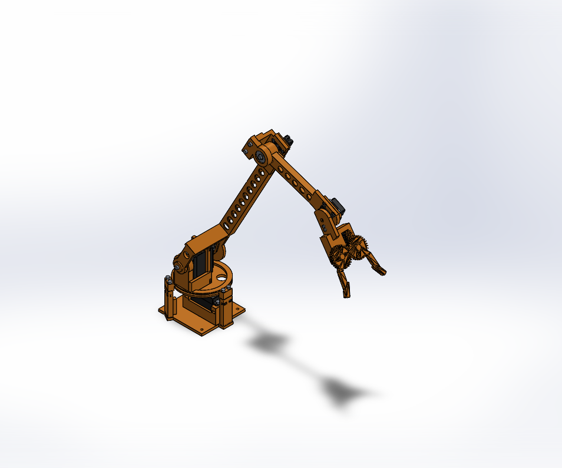
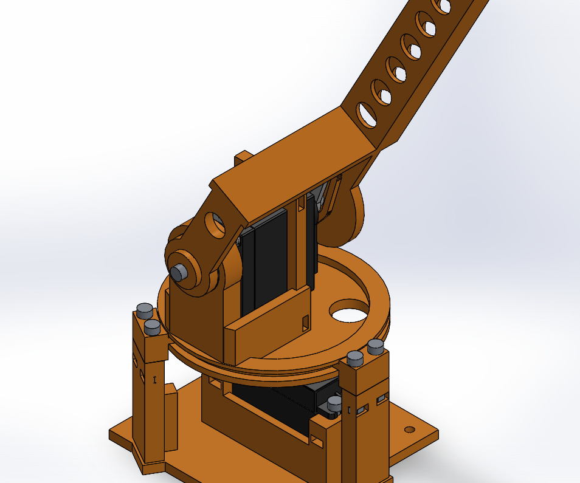
1_VERSION_FINALE (a ouvrir)\Documents\MONTAGE.txt. Détail des changements : CE QUI A CHANGE.txt.| Point traité | Solution retenue |
|---|---|
| Porte-à-faux de l'épaule et du coude | Roulement 608 dans la joue du plateau et dans une plaque vissée sous le coude, face au servo. |
| Base qui repose sur l'axe du servo | Gorge sur le pourtour du plateau et 3 patins à 120°, à la place des 4 piliers. |
| Poids | Bras 47,5 → 40,8 g, avant-bras 17,6 → 16,4 g, plaque du coude 6,7 → 5,8 g : 8,8 g de moins, soit environ 1,5 % du blocage de l'épaule (estimé). Gain modeste. |
| Trous du corps de pince | 2,6 mm, sans lamage : la vis de 2 mm y passe librement et se visse dans la broche. |
| Palonnier de la base | arm01 (cotes réelles, votre pièce), 4 vis de 2 × 8 par le dessous, trous de 1,7 mm traversants. La pointe dépasse d'environ 1,7 mm au-dessus du plateau, sans gêne. |
| Vis du bas du MG996R d'épaule | Écrous captifs glissés par les côtés dans une face de 5 mm, avant de poser le servo. On ne visse plus que côté servo. |
| Voir où vont les vis | 67 éléments dessinés dans le bras : vis M3 × 8 (12), × 12 (4), × 16 (4), × 20 (6), 26 écrous, 1 rondelle, 14 vis de 2 × 8. |
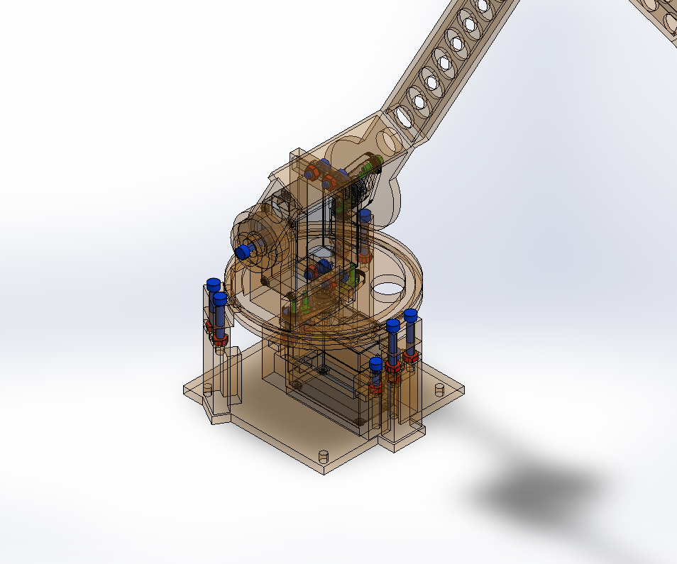
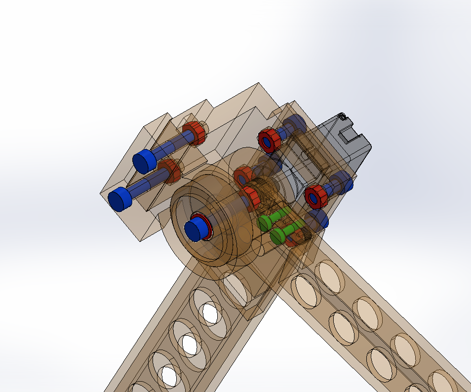
| Vis | Résultat, tige de tournevis de 4 mm |
|---|---|
| 36 vis sur 38 (dont les 4 du lacet, les 2 du haut de l'épaule, brides, patins, palonniers) | Accès tout droit, sans obstacle |
| 2 vis du bas du MG996R d'épaule | La tige frotte sur la jante. Libre à partir de 2° d'inclinaison. |
| Vis centrale du MG996R de lacet | La partie haute de la face passe au-dessus de l'axe. Libre à partir de 4° d'inclinaison du côté des têtes de vis de l'épaule (+y), avant de poser le servo d'épaule. |
| Vis centrale du MG996R d'épaule | Accès tout droit, par l'extérieur de la joue |
| 26 écrous | Chacun a un chemin d'entrée dans sa pièce (cercle inscrit de l'écrou) |
Il faut un tournevis à tige de 4 mm au plus et de 70 mm au moins. La main et le manche ne sont pas modélisés : seul un montage réel le confirmera.
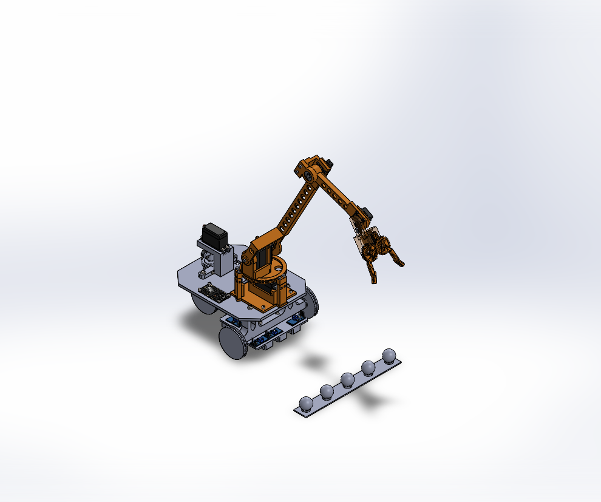
Assemblage1v2, dossier 1_VERSION_FINALE), bras contraint sur le bâti.Le règlement donne une ligne de 19 mm, un rayon mini de 200 mm et des lignes voisines à 100 mm au moins. Le meilleur écart vaut à peu près demi-ligne + demi-tache du capteur : 9,5 + 3,5 ≈ 13 mm. Les capteurs latéraux mordent alors les bords de la ligne quand le robot est centré : la moindre dérive se voit tout de suite, en continu, donc sans à-coups.
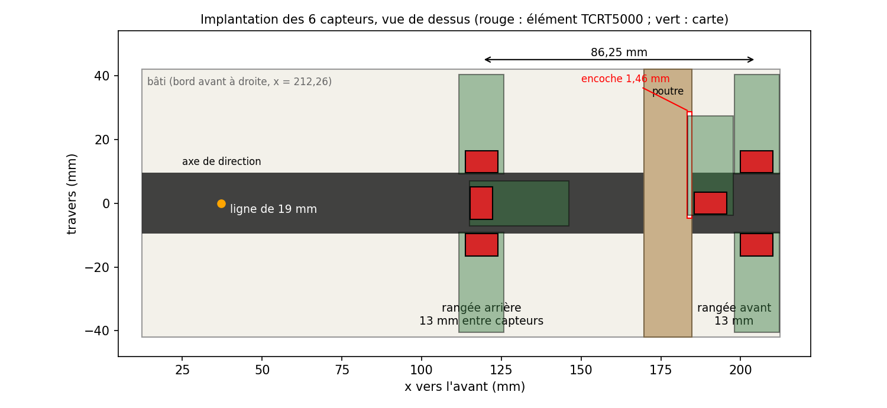
| Modèle (hauteur 11,4 mm, tache ≈ 6 mm) | 33 mm (avant) | 13 mm (retenu) |
|---|---|---|
| Autour du centre | ±6,5 mm sans aucune information, puis un trou de 8 mm où aucun capteur ne voit la ligne | Mesure continue, de −17 à +17 mm environ |
| Erreur de lecture pour 1 % de bruit, au centre | non mesurable (pente nulle) | ≈ 0,13 mm |
| Simulation à 20 cm/s, virages de 200 mm | aucun réglage testé ne suit la ligne | erreur moyenne 2,8 mm, maxi 7,6 mm |
| Simulation à 30 cm/s | aucun réglage testé | erreur moyenne 6,7 mm, maxi 20 mm, direction agitée |
| Simulation à 40 cm/s | aucun réglage testé | aucun réglage testé ne suit la ligne |
Calcul de position : e = 13 × (droite − gauche) / (gauche + milieu + droite), chaque capteur étalonné de 0 (blanc) à 1 (noir). La tache vient des angles de la fiche du TCRT5000 : elle est à mesurer sur les vrais capteurs, et les gains de la simulation (PD simple) ne sont pas à reprendre tels quels. Essayé aussi : rapprocher la rangée avant à 7 mm de l'essieu : aucun réglage ne suit la ligne, car avec la roue directrice à l'arrière il faut garder les capteurs devant l'essieu. Dans le modèle, les roues avant touchent 5,4 mm plus haut que les roues arrière : à vérifier sur le robot, cela change la hauteur des capteurs.
MONTAGE.txt. Pièces : 02_Impression_3D (tout dans un seul dossier). Vos pièces d'origine sont conservées.| Point traité | Solution retenue |
|---|---|
| Servo de pince posé au hasard | Il était tourné de 45° sur lui-même, à moitié hors du bloc, sans vis. Il est maintenant droit, dans un logement fermé : on l'enfile par l'arrière, ses pattes butent sur un épaulement, 2 vis de 2 × 8. Son axe ne bouge pas (0,000 mm) : pignon et mâchoires inchangés. Corps de pince : 21,4 → 23,3 g. |
| Pièce des roues avant (U inutile) | Les 4 fonctions du U sont supprimées, pas effacées : poutre droite d'une roue à l'autre, avec 2 trous de 3,5 mm pour le support des capteurs et une encoche de 1,46 mm dans sa face avant (passage d'une carte, fonction « Encoche carte capteur »). |
| Savoir si le robot est parallèle à la ligne | 2 rangées de 3 capteurs, à 86,25 mm l'une de l'autre, sous le bâti (rien ne dépasse des 200 mm du bâti), 13 mm entre capteurs (08/11, voir ci-dessous). Les 2 capteurs latéraux ont leur carte vers l'extérieur, en travers ; le central d'avant est 14,5 mm plus en arrière pour laisser passer sa carte. Rangée arrière descendue de 3 mm : même hauteur au sol que l'avant. Une plaque unique passe sous la poutre : 2 vis M3 × 20 et une colonne vissée au trou d'origine du bâti. 32 g (45 avant). |
| Bras sur le bâti | 4 vis M3 × 12 et 4 écrous dans les 4 trous du socle. Le bâti avait déjà ces trous. |
| Tige de direction qui plie à l'accélération | Cuve sous le bâti avec un 2e roulement (8 × 22 × 7). Elle se fixe aux 2 vis de l'ancien support, plus 1 seul trou à percer dans le bâti (Ø3,5). Une entretoise à gradins appuie sur la bague intérieure : la poussée de la roue passe par le roulement et plus par le servo. |
| Servo de direction trop faible | MG996R à la place du MG90S, axe inchangé. Nouveau support (mêmes appuis sur le bâti) : le servo entre par le dessus, 4 vis M3 et écrous glissés. Le palonnier balaie ±90° sans rien toucher. Le servo monte à 77 mm au-dessus du bâti (61 mm avant) et demande l'alimentation séparée (chapitre 6). |
| Liaison servo / tige | Nouvelle pièce : arm01 dans une empreinte, 4 vis de 2 mm, manchon de 8,2 mm (9 mm avant : du jeu), goupille M3 × 20. |
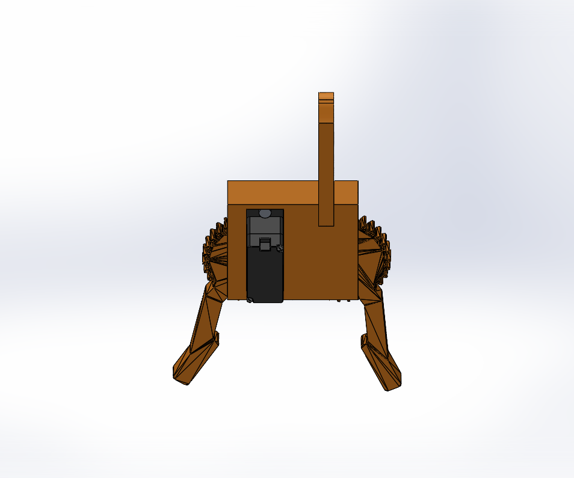
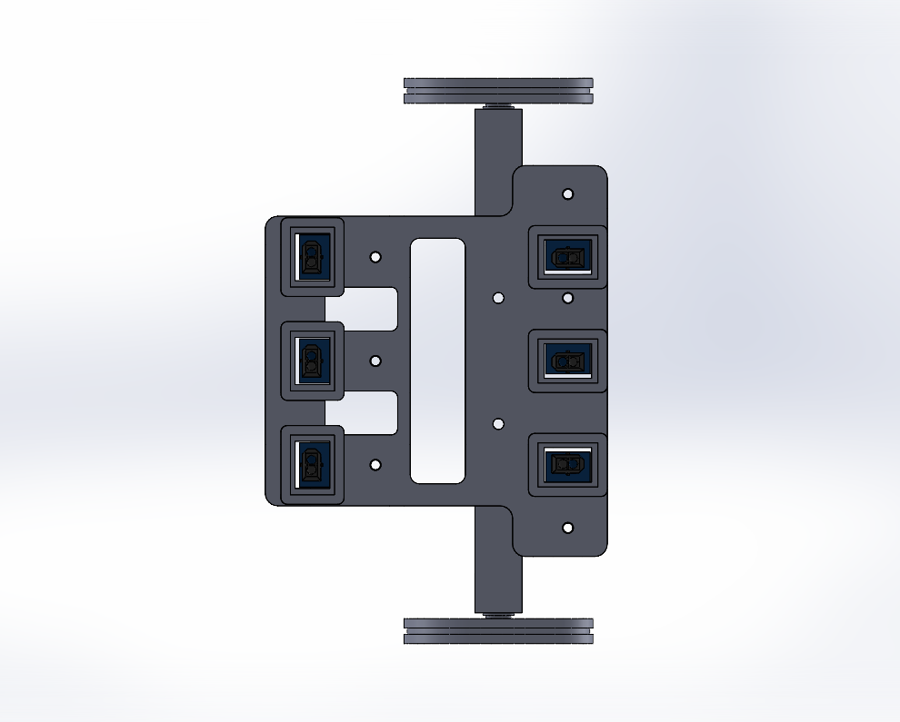
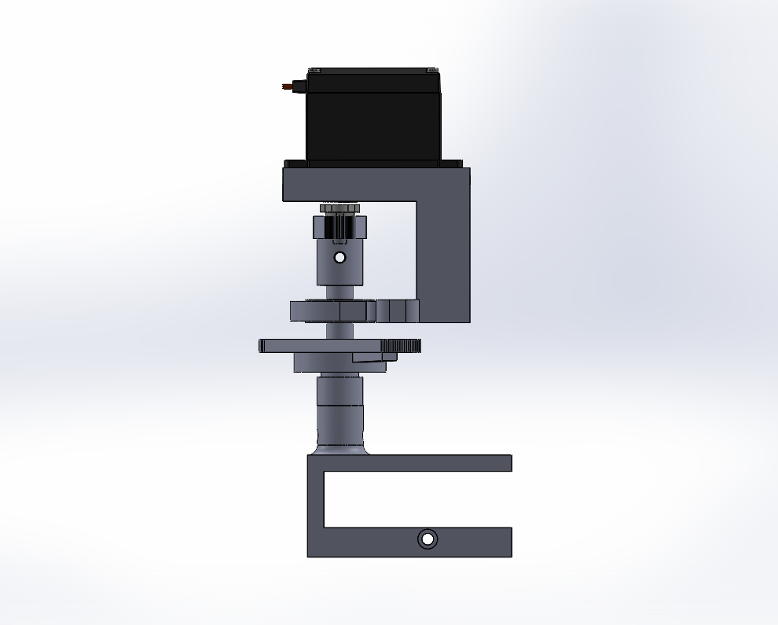
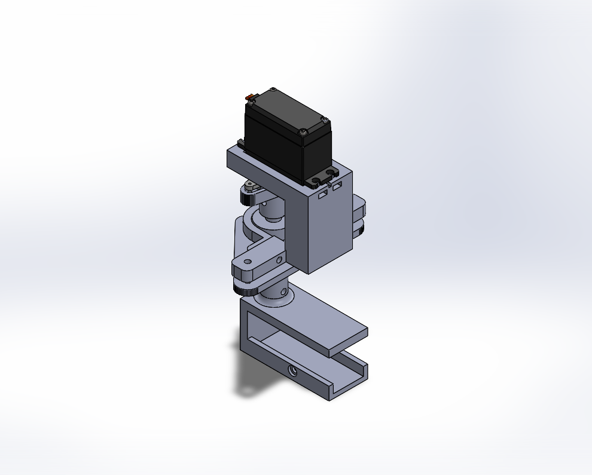
| Contrôle dans SolidWorks | Résultat |
|---|---|
| Bras seul / robot complet | 99 / 183 contraintes, 0 en erreur (93 / 119 composants) |
| Servo de pince contre son corps | 0 mm³ (5,4 + 5,3 mm³ avant) |
| MG996R, arm01 et liaison, sur tout le débattement de ±90° (pas de 15°) | 0 mm³ |
| Bras contre le reste du robot | aucune interférence |
| Pièces neuves : vis, écrous, capteurs | filets des vis dans leurs écrous, sinon moins de 0,4 mm³ ; capteurs contre support 4 × 0,4 mm³, identiques avec votre support d'origine |
| 15 STL du bras et 7 du châssis | étanches, à jour |
Comme dans vos supports d'origine (support1 et support 2 : empreinte de 5 mm à la forme du palonnier double du MG996R ; support 3 : celle de la broche),
chaque palonnier est maintenant emboîté dans une empreinte à sa forme, creusée dans la pièce qu'il entraîne (jeu de 0,15 mm). C'est l'empreinte qui transmet le couple.
De petites vis autotaraudeuses de 2 mm (celles livrées avec les servos) traversent la pièce et se vissent dans les trous du palonnier pour le tenir.
Les palonniers sont vos pièces d'origine : « Servo MG996R arm01 » (MG996R) et « broche » (SG90/MG90S).
| Articulation | Palonnier | Empreinte | Vis de 2 mm |
|---|---|---|---|
| Lacet | arm01 | Sous le plateau, dans une collerette. Bras du palonnier le long de y. Passage de 8 mm sur l'axe pour sa vis centrale. | 4, par le dessous, à travers le palonnier (à ±10,5 et ±16,5 mm), avant de poser le plateau. Trous de 1,7 mm traversants. |
| Épaule | arm01 | Face intérieure de la joue du bras, dans une collerette. Bras du palonnier le long du bras. Passage de 8 mm sur l'axe. | 4, par l'extérieur de la joue (à ±10,5 et ±16,5 mm), têtes lamées. |
| Coude | broche | Dans le moyeu de l'avant-bras : la plaque de la broche y entre entièrement, avec un logement pour son moyeu et sa nervure. Bras de la broche vers le poignet. | 2, par le dessous (à 7,9 et 12,9 mm), têtes lamées. Un trou Ø6 sur l'axe laisse passer le tournevis de la vis centrale. |
| Poignet | broche | Dans la plaque de 5 mm de votre pince. Seule place pour le bras de la broche (20 mm) : le long de l'axe x de la pince, l'empreinte s'arrête 2 mm avant le bloc des mâchoires. | 2, par l'extérieur de la plaque, trous de 2,6 mm sans lamage. Le trou Ø5 d'origine, sur l'axe, laisse passer le tournevis. |
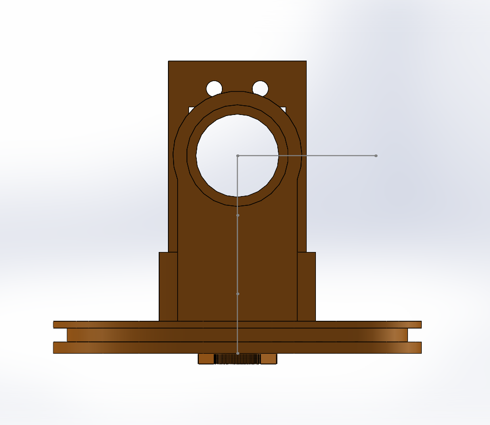
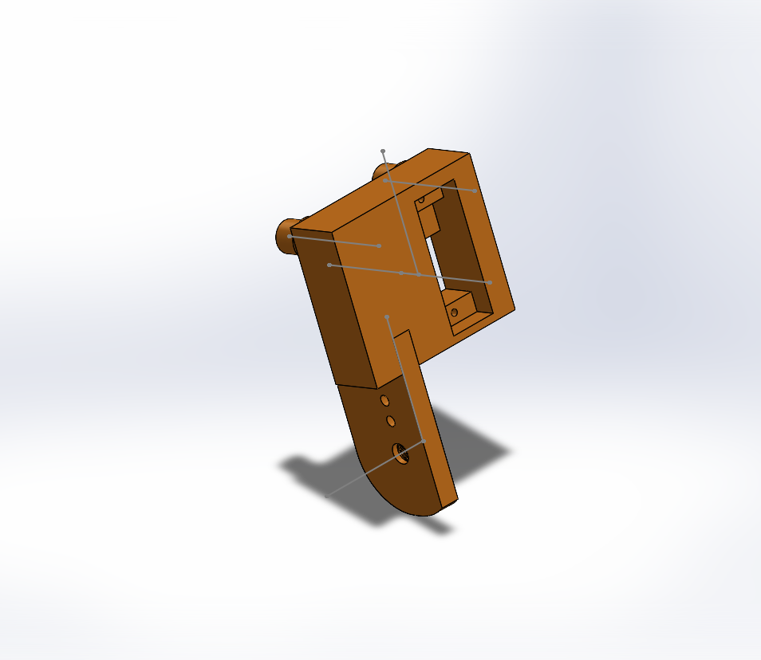
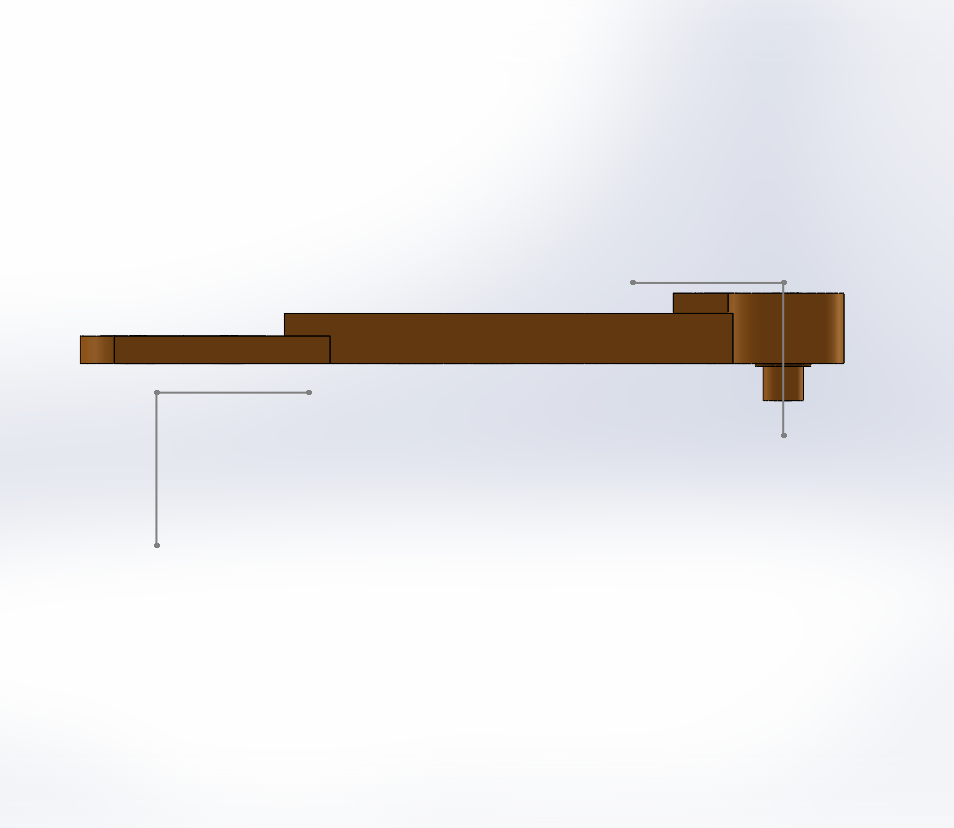
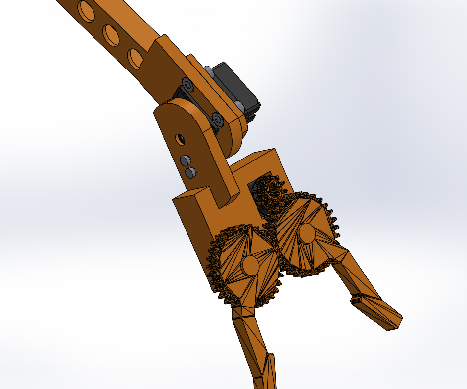
Montage d'une articulation (ordre complet des pièces dans MONTAGE.txt) :
DECALAGE_DEG dans le programme de l'ESP32 (chapitre 6).| Problème | Cause | Correction |
|---|---|---|
| (06/11) Les 2 petits trous du corps de pince : vis trop serrée | Les trous étaient trop justes pour une vis de 2 mm dans une pièce imprimée. | Trous de 2,6 mm : la vis passe et ne se visse que dans la broche. |
| (06/11) Vis du bas du MG996R difficiles à atteindre | Il fallait tenir les écrous derrière la face du plateau, derrière le servo. | Écrous captifs glissés par les côtés, avant de poser le servo. |
| (30/10) Pas d'emplacement pour les palonniers (arm01, broches) | Les palonniers étaient seulement plaqués contre les pièces, avec 4 trous en croix qui ne correspondaient même pas au arm01 ; aucune broche n'était dans l'assemblage. Au poignet, la broche aurait même traversé la plaque de la pince de 1,2 mm. | Empreintes à la forme des palonniers + vis de 2 mm (ci-dessus) ; vos palonniers et servos d'origine dans l'assemblage. |
| Pas de place pour le MG996R du socle | J'avais pris les cotes d'une fiche technique (pattes à 26,5 mm du fond). Votre modèle a ses pattes à 28,1 mm, une sortie de câble sous l'axe, et 47 mm du fond au-dessus du palonnier. Le servo aurait touché le fond du socle. | Logement recoté sur votre modèle : le fond du servo passe dans une fenêtre de la plaque, un tunnel laisse passer le câble, et les pattes reposent sur deux blocs. |
| Pas d'emplacement pour le servo du poignet | L'avant-bras venait de l'ancien maillage, où le servo était collé à côté de la poutre sans aucun logement. | Nouvel avant-bras : poutre creuse, moyeu avec l'empreinte de la broche du coude, logement + bride pour le servo du poignet. |
| Un servo « soudé » au bras, au coude | Dans les maillages d'origine, le servo du poignet faisait partie de l'avant-bras, et le servo de pince faisait partie de la pince. | Les deux sont maintenant des pièces séparées, contraintes dans leur logement. |
| (trouvé en vérifiant) SG90 du coude trop haut | Le palonnier n'aurait pas atteint la cannelure : 7 mm d'écart avec l'axe du coude de la cinématique. | Servo abaissé : dessus de sa tour d'engrenages sur l'axe du coude (la broche se pose dessus : encadré ci-dessus). |
| (trouvé en vérifiant) la pince frotte le poignet | La paroi de la pince d'origine remonte de 30 mm le long du poignet, à 17 mm de l'axe ou plus. En tournant, elle balaie tout le côté du poignet opposé au coude. | Servo du poignet retourné vers le coude (même axe, même cinématique) et avant-bras limité à 15 mm de l'axe de ce côté. |
verifier_logements.py)Les vrais modèles SolidWorks des servos et des palonniers sont placés dans les pièces, puis on calcule le volume commun (intersection booléenne). Ensuite, on fait tourner les joints sur toute leur course. En plus, la détection d'interférences de SolidWorks a été lancée sur l'assemblage complet.
| Vérification | Résultat |
|---|---|
| MG996R de lacet / socle, MG996R d'épaule / plateau | 0 mm³ (pattes posées sur leurs appuis) |
| SG90 du coude / bras et bride ; SG90 du poignet / avant-bras et bride | 0 mm³ |
| Les 4 palonniers contre la pièce qui les porte, et contre leur servo (hors cannelure) | 0 mm³ |
| Appui des 4 palonniers au fond de leur empreinte | écart 0,05 mm (mesure) |
| Coude de −3° à 177° : bras + servo contre avant-bras + servo, et la broche contre le bras (7 positions) | 0 mm³ partout |
| Poignet de −69° à 111° : pince (avec son empreinte) contre avant-bras + servo, et la broche (7 positions) | 0 mm³ partout, jeu mini 2 mm |
Bilan refait le 06/11 sur la version allégée (verifier_logements.py) | tous les servos entrent, aucune interférence |
| Rotation de la base sur tout le débattement, contre patins et socle | aucune collision |
| Rotation de l'épaule : le bras touche les patins vers 2,1–2,2 rad | le réseau ne dépasse pas 1,57 rad |
SolidWorks signale 154 recouvrements sur le bras. Les plus gros : les vis de 2 mm dans les palonniers, le plateau et le corps de pince (3,5 à 6,7 mm³, normal, elles creusent leur filet), et les dents en prise de la pince (2,7 mm³). Ceux de moins de 1 mm³ n'ont pas été relus un par un. Robot complet : aucun recouvrement entre le bras et le reste ; 132 au total, ceux qui touchent aux pièces anciennes (broches de l'ESP32 dans le bâti, moteur et roues) n'ont pas été corrigés.
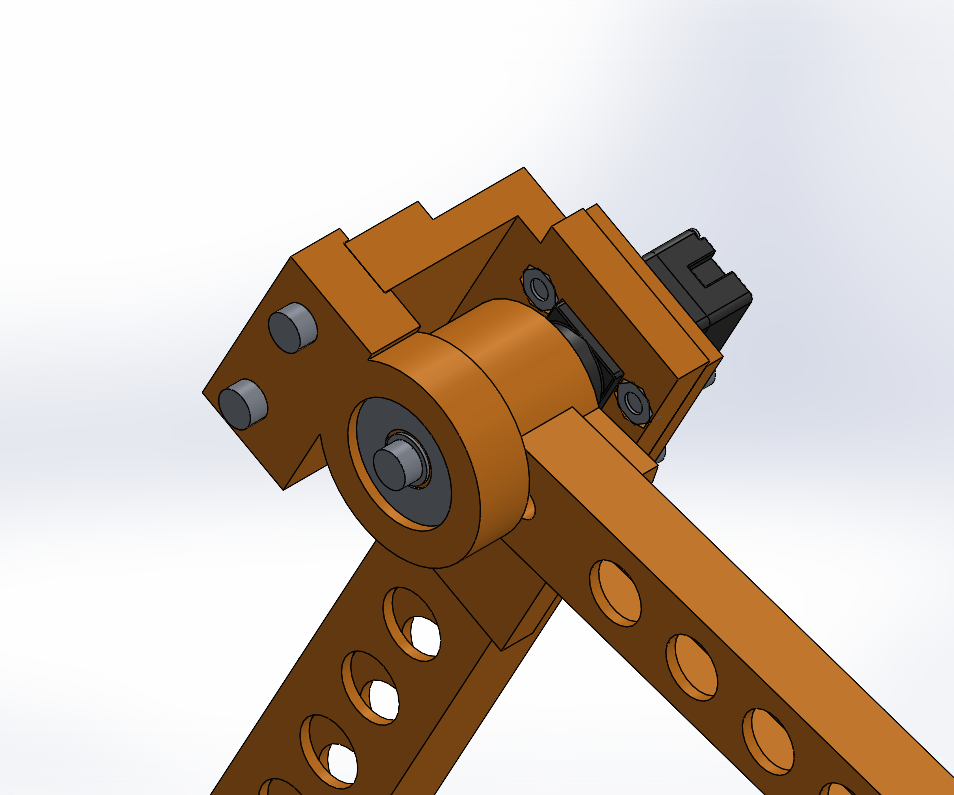
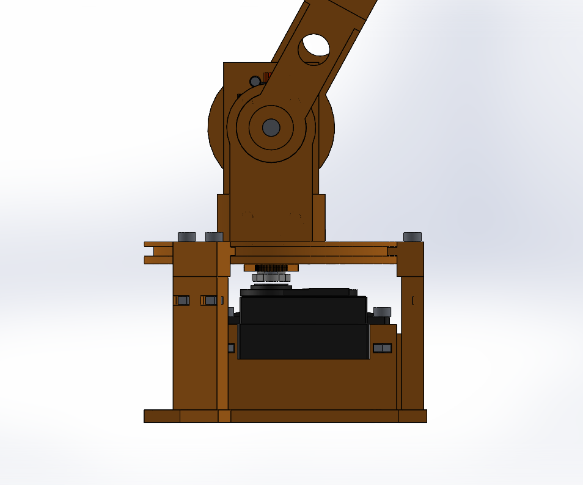
01_SolidWorks\1_VERSION_FINALE (a ouvrir)\Bras 50cm.SLDASM1_VERSION_FINALE (a ouvrir)\Assemblage1v2.SLDASM : 183 contraintes, 0 en erreur, 119 composants. Tout est dans ce dossier (rangé par Pack and Go) : on peut le copier ou le déplacer d'un bloc, sans changer ses sous-dossiers.
Le socle tient sur le bâti par 3 contraintes : sa face et 2 trous opposés. Régénérer le socle casse ces 3 contraintes : les refaire (chapitre 9).ICAM\Pieces tipe ne sont pas modifiés.Servo MG996R-1 = lacet, -2 = épaule ; Servo MG996R arm01-1 = lacet, -2 = épaule ;
Servo MG90S-1 = coude, -2 = poignet, -3 = pince ; broche-1 = coude, -2 = poignet ; Roulement 608-1 = épaule, -2 = coude.01_SolidWorks\3_Anciennes versions (3a à 3k). Images par zone avec la visserie en couleur : 1_VERSION_FINALE (a ouvrir)\Documents\Vues visserie ; modifications du robot : Vues 07-11 et Vues 08-11.ros2_control (JointTrajectoryController), avec les vrais couples des MG996R et des SG90 comme limites.bash preparer_gazebo.sh, après avoir copié les nouveaux STL dans meshes/bras_50cm, puis refaire un test.
| Tour | 0 | 1 | 2 | 3 | 4 | 5 | 6 | 7 | 8 |
|---|---|---|---|---|---|---|---|---|---|
| Balles déposées, simulateur rapide (240 essais jamais vus) | 5 % | 32 % | 91 % | 97 % | 99 % | 99 % | 100 % | 100 % | 100 % |
| Pilote | Séquences de 3 balles réussies | Balles déposées | Échecs (balles) |
|---|---|---|---|
| Expert (référence) | 4 / 4 | 12 / 12 | aucun |
| Ancien réseau (avant les règles définitives) | 6 / 10 | 20 / 30 | balles lâchées juste après la prise |
| Nouveau réseau, phase de corrections (20 dispositions) | 18 / 20 | 56 / 60 | 1 temps dépassé, 1 tombée, 2 non jouées |
| Test officiel – réseau du simulateur (20 autres dispositions) | 16 / 20 | 51 / 60 | 5 non jouée(s), 2 temps dépassé, 2 tombée(s) |
| Test officiel – réseau affiné avec Gazebo (mêmes dispositions) : réseau final du 29/10, ne sait pas prendre devant le robot | 20 / 20 | 60 / 60 | aucun |
| Complément « parcours » (balles dans toutes les directions), mêmes dispositions | 17 / 20 | 52 / 60 | 5 non jouée(s), 1 poussée(s), 2 tombée(s) |
| Réseau officiel (30/10) : complément « parcours » affiné avec 19 000 corrections Gazebo, mêmes dispositions | 18 / 20 | 54 / 60 | 4 non jouée(s), 1 poussée(s), 1 tombée(s) |
| Réglette devant le robot (−35° à +35°), 2 balles par séquence vers les petits réceptacles, 20 dispositions | |||
| Complément « parcours » | 16 / 20 | 34 / 40 | 2 non jouée(s), 4 temps dépassé |
| Réseau officiel | 17 / 20 | 36 / 40 | 2 collision(s), 1 non jouée(s), 1 temps dépassé |
Réseau officiel : modeles/politique_finale.pt (copie de modeles/mission/politique_mission_affine.pt), exporté pour l'ESP32 ; dans le dossier du Bureau : 03_Reseau_de_neurones\modele\1_RESEAU_FINAL (a utiliser)\reseau_final.pt.
L'ancien réseau final (20/20 sur la scène d'origine, mais 0 prise sur 15 droit devant) est gardé en secours : modele\2_Secours (ancien reseau du 29-10)\reseau_secours_29oct.pt
(modeles/politique_finale_29oct.pt dans Ubuntu). Le fichier LISEZMOI.txt du dossier modele résume lequel utiliser.
Une séquence ratée s'arrête à la première balle manquée : les balles suivantes ne sont pas jouées et comptent comme non déposées.
« Temps dépassé » : le réseau hésite au-dessus de la balle sans la prendre, pendant les 70 s autorisées. Le parcours demande de prendre devant le robot (station 2) :
c'est pourquoi ce réseau, un peu moins bon sur la scène d'origine, est retenu. Le réseau définitif sera réentraîné sur la vraie disposition du plateau (chapitre 11).
03_Reseau_de_neurones\esp32\bras_robot (4 fichiers à garder ensemble) : conduite Bluetooth + réseau officiel. Compile (70 % de 3 Mo), téléversé sur l'ESP32 (ESP32-D0WD-V3, COM4).
Paquet esp32 3.3.12, bibliothèque ESP32Servo 3.2.1, carte « ESP32 Dev Module », partition « Huge APP (3MB No OTA) » obligatoire.H, 1, 160 décisions du réseau, D au bout de 16 s, H 5 s plus tard. Cela prouve le programme, pas la prise.cerveau.cpp) comparé à Python sur 2 000 états : écarts de 7×10-6 sur les sorties ; 7 cas à la limite d'un garde-fou diffèrent d'un pas.SENS, DECALAGE_DEG et PINCE_CENTRE n'ont jamais été faits.esp32\test_servos : compile, n'a jamais tourné. Corrections de l'application M.A.V.E. : leur application n'est pas confirmée.| Fonction | Direction | Base | Épaule | Coude | Poignet | Pince | L298N ENA / IN1 / IN2 |
|---|---|---|---|---|---|---|---|
| Broche ESP32 | 18 | 22 | 17 | 33 | 21 | 32 | 25 / 26 / 27 |
À éviter : 34, 35, 36, 39 (entrée seule, ne pilotent rien) ; 12 (démarrage) ; 23 (avec elle, la 22 relisait 983 µs et la liaison série recevait 50 octets parasites par seconde). La masse de l'ESP32 doit être reliée à celle des servos.
| Message | Par | Rôle |
|---|---|---|
S | Bluetooth, USB | Arrêt : propulsion coupée, direction au centre, bras immobile sur place. |
H | Bluetooth, USB | Position home. Si le bras y est déjà : rouvre seulement la pince. |
1, 2 | Bluetooth, USB | Démo : prend la balle 1 ou 2 et la dépose dans le panier. Balles (x ; y) : 20,45 ; 16,02 cm et 23,27 ; 5,47 cm. Panier : 12,04 ; −24,92 cm, lâcher à 18 cm. Refusé hors du home. |
V<n>A, V<n>B | Bluetooth, USB | Recule, avance, vitesse de 0 à 255. Pendant une prise, V ou R<n> l'annule. |
R<n> | Bluetooth, USB | Direction : angle absolu de 0 à 180 (curseur), 90 = centre. Remplace R<n>C/D. |
C x y z g | USB | Point de lâcher en mètres, g = 1 pour le grand réceptacle. Repère : origine sur l'axe du bras au sol, x vers l'avant, z vers le haut. |
B x y z | USB | Balle visée. Le réseau démarre dès qu'il a C et B. |
R seul | USB | Position home. |
J i d | USB | Réglage : bouge le servo i (0 base … 4 pince) de d degrés, puis H pour revenir. |
P | USB | Diagnostic : temps depuis le démarrage, cause du démarrage, impulsions relues. |
E …, D, H | sorties | E : un pas et son temps de calcul (USB). D : balle déposée. H : bras arrivé en home. |
S est lu pendant le retour.
essai_retour_repos.py) : 200/200 retours sans choc après un dépôt et 199/199 sur un ordre à un instant au hasard (retour direct : 150/200 et 179/199). Dans bras_robot, ce retour n'a pas encore été observé sur le vrai bras.
| Constat | Explication | État |
|---|---|---|
| Base et épaule jamais pilotées | Elles étaient sur les broches 34 et 35, en entrée seule. | Déplacées sur 22 et 17. |
Plantage au premier H | Servo::setTimerWidth() faisait redémarrer la carte (chien de garde). | Corrigé : ESP32PWM direct, 16 bits. |
| Masse de l'ESP32 non reliée | Les signaux n'avaient pas de référence commune. | Reliée par vous. |
| Base immobile sur son connecteur | Sur le connecteur de la direction, elle tourne, y compris avec le signal direct de la 22. Servo et signal sont donc bons. | Rouge et marron d'origine à contrôler (5 V, masse). |
| Épaule : résiste, mais retombe à l'horizontale | Le servo vit. Hypothèse principale : le 5 V du L298N est trop faible pour un MG996R en charge. | Alimentation séparée à essayer. |
| Servos qui tremblent | Les impulsions sont fixes au repos : l'alimentation est probablement en cause, pas le code. | À revoir avec l'alimentation. |
J i d. Remettre le servo de direction en place.SENS, DECALAGE_DEG, PINCE_CENTRE en tête de bras_robot.ino) : vérifier la posture home et corriger servo par servo. 2° d'erreur à l'épaule déplacent la pince de 1 cm.C puis B, d'abord sans balle et lentement.C, B, attendre D, repartir.Faut-il réentraîner ? Pas pour la version allégée : longueurs et axes n'ont pas changé. Seulement si les essais réels montrent un écart systématique, et, dès que le plan coté du plateau est connu, pour apprendre la vraie disposition (chapitre 11).
Le réseau ne cherche pas les balles : il a besoin de deux positions, celle de la balle (B x y z) et celle du réceptacle (C x y z g), dans le repère du bras.
Une caméra n'est pas utilisée (hors de la liste du matériel). À la place, on profite de ce que le plateau est fixe : la réglette (10 balles en tout : 2 lots de 5, tous les trous occupés)
et les réceptacles sont toujours au même endroit. Si le robot sait où il s'est arrêté, toutes les positions se calculent d'avance, une fois pour toutes, à partir du plan coté (chapitre 11).
parcours/plateau.py) et envoie C puis B.Le réseau a joué 90 balles par niveau en voyant la balle avec une erreur constante dans une direction horizontale au hasard (tolerance_vision.py) :
| Erreur sur la position de la balle | 0 mm | 3 mm | 6 mm | 9 mm |
|---|---|---|---|---|
| Balles déposées | 99 % | 99 % | 64 % | 0 % |
Il faut donc la balle à ~3 mm près. Les mâchoires attrapent une balle décalée de 6 mm au plus. L'erreur d'arrêt du robot se retrouve telle quelle sur la balle, et c'est l'angle qui compte le plus : 1° d'erreur décale une balle à 25 cm de 4,4 mm (0,5° : 2,2 mm). D'où les 2 rangées de capteurs, le plus loin possible l'une de l'autre. Avec 86 mm entre elles, 1 mm d'écart de lecture entre les deux rangées fait 0,66° : pour tenir les 0,5°, il faut lire la ligne à 0,75 mm près. À mesurer sur les vrais capteurs.
| Distance de la balle à l'axe du bras | 0,5° d'erreur | 1° | 2° |
|---|---|---|---|
| 20 cm | 1,7 mm | 3,5 mm | 7,0 mm |
| 30 cm | 2,6 mm | 5,2 mm | 10,5 mm |
| 35 cm | 3,1 mm | 6,1 mm | 12,2 mm |
| Élément | Rôle | Unités |
|---|---|---|
| 3 capteurs de ligne analogiques (rangée d'origine) | Suivi de ligne ; détection des traits en travers ; centrage sur la ligne. | déjà comptés |
| 3 capteurs de ligne analogiques en plus (2e rangée, 08/11) | Angle du robot à l'arrêt : les deux rangées centrées sur la ligne. Le calcul de ce chapitre et du chapitre 11 supposait 1 seul capteur en plus. | 6 |
| 2 codeurs incrémentaux + roues de mesure | Distance parcourue : ralentir avant le repère, savoir à quelle station on est. | 0 |
| Scotch noir + gabarit imprimé | Nos repères d'arrêt (FAQ précision n°4 : moins de 30 s de pose, sans résidu). | 0 |
| Butée imprimée à l'avant | Garage au grand réceptacle, piloté à la main : avancer jusqu'au contact. | 0 |
| (option) capteur noir/blanc sous la pince | Retrouver le bord de notre repère avec le bras avant la prise, pour corriger l'erreur d'arrêt restante. | 2 |
03_Reseau_de_neurones\modele\1_RESEAU_FINAL (a utiliser)\reseau_final.pt (le seul à utiliser, exporté pour l'ESP32) ;
l'ancien en secours dans 2_Secours (ancien reseau du 29-10). Dans Ubuntu : modeles/politique_finale.pt et politique_finale_29oct.pt.
Tests : valider_mission_gazebo.sh, affinage_mission.sh.| Outil | Utilisé pour |
|---|---|
| Ubuntu 22.04 (WSL) + ROS 2 Humble | Simulation, communication avec les servos simulés (topics, ros2_control). |
| Ignition Gazebo Fortress | Physique 3D : contacts, prise de la balle, couples des servos. |
| Python 3.10, NumPy, PyTorch | Cinématique, expert, simulateur rapide, réseau de neurones, apprentissage. |
| CadQuery / OpenCascade, trimesh | CAO des pièces par programme, export STEP/STL, vérification des interférences. |
| API SolidWorks (C#, appelée par PowerShell) | Import des STEP, esquisses d'axes, assemblage et contraintes, images. |
| C / Arduino (ESP32Servo), g++ | Programme embarqué, et sa vérification sur PC contre Python. |
~/ros2_ws/src/mon_bras_robot/, copiés dans le dossier du Bureau)| Fichier | Rôle et fonctions importantes |
|---|---|
bras_50cm/dimensionnement.py | Étude 5 / 6 axes : longueurs, couples, marges. |
bras_50cm/cao_bras.py | Pièces : socle(), plateau(), bras(), avant_bras(), bride_sg90(), corps_pince(). SERVOS place chaque modèle de servo là où l'impose la cinématique ;
PALONNIERS et empreinte() : position des palonniers, empreintes, collerettes et vis. visserie() : place de chaque vis et de chaque écrou. |
bras_50cm/preparer_palonniers.py | Copie vos palonniers et votre pince d'origine (STEP), et calcule leur recalage (servos/recalages.json). |
bras_50cm/verifier_logements.py | Interférences servos/palonniers/pièces, appui des palonniers, rotation du coude et du poignet. |
bras_50cm/acces_outils.py, acces_ecrous.py | Accès d'un outil à chaque vis, à chaque étape du montage ; chemin d'entrée de chaque écrou. |
bras_50cm/generer_assemblage_sw.py | Écrit assembler.ps1, qui construit l'assemblage SolidWorks contraint. |
bras_50cm/generer_urdf.py | Modèle du bras pour Gazebo (masses, inerties, couples des servos). |
ia_50cm/cinematique.py | Classe Bras : lecture de l'URDF, outil(q) (cinématique directe), ik() (inverse), butées. |
ia_50cm/zone.py | tirer_scene() : disposition au hasard, ordre des réceptacles ; cible_lacher(). |
ia_50cm/obstacles.py | heurte() : collisions du bras avec la cible, le robot, les balles. |
ia_50cm/expert.py | L'expert : preparer() (chemin vérifié), action() (geste à chaque pas). |
ia_50cm/politique.py | observation() (27 entrées), Reseau, securite() (garde-fou). |
ia_50cm/sim_cinematique.py | Simulateur rapide SimReceptacles : retard des servos, prise, lâcher, collisions. |
ia_50cm/entrainer_imitation.py | Imitation + DAgger, et --affiner avec les corrections Gazebo. |
ia_50cm/evaluer_receptacles.py | Séquences de 3 balles dans Gazebo (réseau ou expert), et collecte des corrections. |
ia_50cm/creer_scene.py, scene_gazebo.py | Monde Gazebo ; placement des réceptacles, des fantômes et des balles. |
ia_50cm/esp32/ | cerveau.cpp/.h (le calcul en C), exporter_esp32.py (poids → C + vérification). Le programme à utiliser est sur le Bureau : 03_Reseau_de_neurones\esp32\bras_robot\bras_robot.ino. |
ia_50cm/tolerance_vision.py | Précision nécessaire sur la position de la balle (chapitre 7). |
ia_50cm/entrainer_mission.py, affiner_mission.py | Complément « parcours » (balles dans toutes les directions) et son affinage avec les corrections Gazebo. |
ia_50cm/evaluer_mission_gazebo.py | Tests Gazebo du réseau (scène d'origine, réglette devant) et collecte des corrections ; résultats dans modeles/mission/. |
ia_50cm/parcours/plateau.py | Plateau et arrêts : positions vues du bras, verdicts, erreurs d'arrêt, essais (chapitre 11). |
Dans Ubuntu (WSL), après source /opt/ros/humble/setup.bash et source ~/ros2_ws/install/setup.bash. Les tâches longues tournent en priorité basse : le PC reste utilisable.
~/ros2_ws/src/mon_bras_robot/ia_50cm)bash demo_gazebo.sh # démo, terminal 1 : Gazebo avec fenêtre
bash demo_reseau.sh # démo, terminal 2 : 3 séquences au hasard
bash demo_repos.sh # POSITION HOME : bras replié (Gazebo lancé)
bash gazebo_auto.sh 20 --modele modeles/politique_finale.pt # test sans fenêtre, 20 séquences de 3 balles
bash gazebo_auto.sh 5 --expert # l'expert pilote (vérifier la physique)
python3 essai_retour_repos.py 200 # sécurité du retour home (simulateur rapide)
python3 essai_expert.py 40 # l'expert dans le simulateur rapide
python3 tolerance_vision.py modeles/politique_finale.pt 90 # précision nécessaire sur la balle
bash valider_mission_gazebo.sh 20 # test Gazebo : scène d'origine + réglette devant
python3 -W ignore parcours/plateau.py # plateau et arrêts (chapitre 11)
bash arreter_gazebo.sh # ferme les restes de GazeboLes scripts de démo font ceci (pour taper à la main : une ligne du PDF = une commande ; ne jamais couper la ligne ros2 launch) :
source /opt/ros/humble/setup.bash
source ~/ros2_ws/install/setup.bash
ros2 launch mon_bras_robot_moveit_config gazebo.launch.py robot:=bras_50cm monde:=scene_trois_receptacles
python3 evaluer_receptacles.py 3 --modele modeles/politique_finale.pt --graine $RANDOMbash entrainement_propre.sh # repart de zéro (l'ancien est archivé), ~2 h
bash entrainer.sh --reprendre 3 # 3 tours de correction de plus
bash fin_automatique.sh # corrections Gazebo + affinage + test officiel + dossier du BureauOuvrir 03_Reseau_de_neurones\esp32\bras_robot\bras_robot.ino dans l'IDE Arduino (ESP32 Dev Module, Huge APP), téléverser, moniteur série à 115 200 bauds, fin de ligne « New Line ».
exporter_esp32.py génère encore B1 et écrit dans bras_esp32, et exporter_dossier.sh recrée l'ancien dossier. Un nouvel export ne met pas à jour bras_robot : à adapter avant le prochain réentraînement.~/ros2_ws/src/mon_bras_robot/bras_50cm)~/venv_cao/bin/python preparer_palonniers.py # palonniers + pince d'origine, recalages (une fois)
~/venv_cao/bin/python cao_bras.py # pièces -> pieces/*.step, *.stl, masses.json
~/venv_cao/bin/python verifier_logements.py # interférences servos / pièces / mouvements
# Attention : régénère un bras seul, à part de 1_VERSION_FINALE (il faudrait refaire ensuite le Pack and Go)
~/venv_cao/bin/python generer_assemblage_sw.py "/mnt/c/Users/amaur/Desktop/Bras robotisé/01_SolidWorks/1_ASSEMBLAGE_FINAL (a utiliser)"
# puis dans PowerShell Windows (SolidWorks fermé) :
# powershell -ExecutionPolicy Bypass -File "C:\Users\amaur\Desktop\Bras robotisé\01_SolidWorks\1_ASSEMBLAGE_FINAL (a utiliser)\assembler.ps1"
# puis le robot complet, SolidWorks fermé : 04_Simulation_Gazebo\bras_50cm\solidworks\reparer_v2.ps1
~/venv_cao/bin/python acces_outils.py # accès d'un outil à chaque vis
~/venv_cao/bin/python acces_ecrous.py # chemin d'entrée de chaque écrou
cd robot ; ~/venv_cao/bin/python support_capteurs.py . ; ~/venv_cao/bin/python direction.py . ; cd .. # pièces du châssis
bash ../ia_50cm/preparer_gazebo.sh # régénère l'URDF et la scène Gazebo
# exporter_dossier.sh : ne plus le lancer sans l'adapter (il recrée esp32/bras_esp32)02_Impression_3D\corps_pince.stl, à réimprimer).
Son servo est maintenant droit dans un logement fermé, tenu par 2 vis de 2 × 8 : l'ancienne pince imprimée ne convient plus.| Exigence | Où on en est |
|---|---|
| Balles Ø23 mm, 2 g, à ne pas abîmer | Prise par mâchoires engrenées, serrage final lent. Couple des servos vérifié avec la balle. |
| Trois réceptacles, dont un à 50 cm | Réseau officiel : 54/60 balles dans Gazebo sur la scène d'origine et 36/40 avec la réglette devant (dispositions jamais vues) ; le réseau du 29/10 faisait 60/60 mais ne prenait pas devant le robot. |
| Match de 3 minutes au plus (phase finale) | Le bras met 16 à 21 s par balle, soit environ 1 minute pour les 3. Il reste ~2 minutes pour rouler. |
| Une seule carte Arduino Uno | ESP32 autorisé sous conditions (FAQ, précision n°2) : il faut le faire valider par le responsable matériel, et le groupe doit être autonome (fourniture, programmation, dépannage). |
| Base dans un carré de 200 mm (FAQ) | Bâti de 200 mm. En position home, le bras ne dépasse pas de la base (de −6 à +9 cm, ±4,6 cm) et la préhension peut dépasser légèrement pendant la prise. À vérifier : dans le modèle, les batteries (26 mm derrière le bâti) et les roues avant (6 mm devant) portent la longueur à environ 232 mm. |
| Coût du robot ≤ 60 unités | Environ 78 unités hors ESP32 après les ajouts des 07 et 08/11 : 18 de trop (détail ci-dessous). À arbitrer. |
| Bras | Prix unitaire | Nombre | Unités |
|---|---|---|---|
| Servomoteur MG996R (lacet, épaule) | 10 | 2 | 20 |
| Servomoteur MG90 (coude, pince) | 4 | 2 | 8 |
| Servomoteur SG90 (poignet) | 3 | 1 | 3 |
| Impression 3D PLA, visserie M3, vis de 2 mm des palonniers | 0 | – | 0 |
| 2 roulements 608 (épaule, coude) | 0,5 | 2 | 1 ** |
| ESP32 | « à définir » | 1 | ? |
| Total du bras | 31 + ESP32 |
** Le groupe compte déjà 4 roulements dans ses 49 unités : si ce sont des 608, le total ne change pas. À vérifier. Ne pas rendre les 2 roulements du bras.
Le groupe A5 (si c'est bien le vôtre) en est à 49 unités, dont 1 MG996R et 2 MG90 déjà empruntés pour le bras. Pour finir le bras, il manque 1 MG996R (10) et 1 SG90 (3), soit 62 unités : 2 de trop.
Pistes, sachant qu'un composant rendu en bon état est remboursé :
rendre le moteur pas à pas 28BYJ (3 unités), s'il ne sert plus, ce qui ramène à 59/60 ; sinon le ressort (1) et un roulement 608zz (0,5) ne suffisent pas.
Mettre un SG90 au coude au lieu d'un MG90 économise 1 unité, mais le coude est l'axe le plus chargé : à éviter.
Mise à jour du 08/11 (prix du tableau ci-dessus ; l'Excel n'est plus dans Téléchargements, donc non relu) : 3 capteurs de ligne en plus (2e rangée, 6 unités) et le MG996R de direction (10 unités) font 78 unités, 75 en rendant le 28BYJ. Le servo de direction n'apparaît pas dans la liste du groupe ci-dessus : s'il y figurait comme MG90, le MG996R ne coûte que 6 de plus (74 ou 71). Il y aura aussi 6 roulements sur le robot (2 roues avant, 2 direction, 2 bras) pour 4 comptés, soit jusqu'à 1 unité de plus.
Il faut donc faire des choix : par exemple ne mettre qu'1 capteur dans la 2e rangée (−4) ; garder un MG90S à la direction n'est pas souhaitable, puisqu'il ne suffit pas. Les codeurs, le scotch et les pièces imprimées comptent 0.
Le prix de l'ESP32 est « à définir » : à demander au responsable matériel, car il peut faire dépasser le budget. La carte Arduino Uno, elle, compte 0 unité si elle est utilisée dans le robot.
export LIBGL_ALWAYS_SOFTWARE=1 du ~/.bashrc si l'affichage par la carte graphique fonctionne (simulation ~7× plus fluide).Le principe : le robot ne mesure rien autour de lui. Le plateau est fixe et les balles sont toujours dans les mêmes trous : si le robot sait où il s'est arrêté
(position le long de la ligne, écart à la ligne, angle), la position de chaque balle et de chaque réceptacle par rapport au bras se calcule d'avance.
Ce sont ces valeurs que l'ESP32 envoie au réseau (B x y z, C x y z g). Les traits du plateau servent à savoir où l'on est.
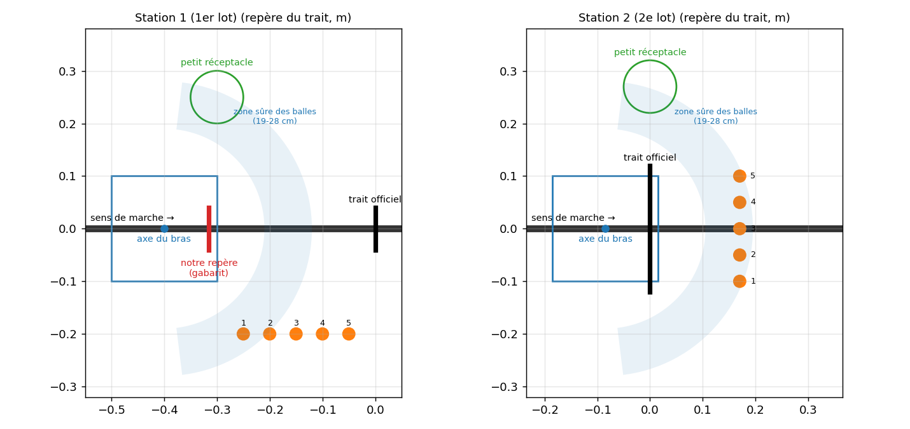
| Étape | Ce que fait le robot | Capteurs (unités) |
|---|---|---|
| Station 1 (1er lot, petit trait juste après les balles) | Le trait est après les balles : arrêté dessus, le bras les aurait derrière lui (le lacet ne tourne que de ±85°). On s'arrête donc sur notre repère en scotch noir, posé avant le départ avec un gabarit imprimé calé contre le trait officiel et la ligne (ici 31,5 cm avant le trait). Prise de la balle la plus proche (trou 1), dépôt dans le petit réceptacle 1. | 3 capteurs de ligne analogiques à l'avant (déjà prévus) : suivi de ligne, et un trait en travers est vu par les 3 en même temps. 1 capteur analogique à l'arrière (2) : à l'arrêt, le robot pivote jusqu'à avoir la ligne centrée à l'avant et à l'arrière → angle à ~0,5° près. 2 codeurs sur les roues (0) : ralentir avant le repère, approche lente et retour sur son bord. |
| Station 2 (2e lot, grand trait) | Arrêt directement sur le grand trait (réglette supposée devant, en travers de la ligne). Balle du milieu (trou 3) → petit réceptacle 2 ; puis une 2e balle (sa voisine de droite, trou 2, ou celle du bout, trou 1), gardée dans la pince, bras replié. | |
| Grand réceptacle | Après la fin de la ligne, pilotage à la main (application) en faisant le tour, jusqu'à avoir le grand réceptacle 22,5 cm devant l'axe du bras (zone apprise : 20,5–25 cm, ±15°), puis dépôt. | Conseillé : une butée imprimée à l'avant du robot qui touche le pied du réceptacle (0) : le pilote avance jusqu'au contact. |
| Prise | Balle (x ; y) | Distance, angle | Réceptacle (x ; y) | Arrêt parfait | Repère + capteur arrière (±2 mm, ±0,5°) | Sans capteur arrière (±2 mm, ±1,5°) | Recul aux codeurs (±8 mm, ±1°) |
|---|---|---|---|---|---|---|---|
| Station 1, trou 1 | 15,0 ; −20,0 cm | 25,0 cm, −53° | 10,0 ; 25,0 cm | 100 % | 90 % | 55 % | 48 % |
| Station 2, trou 3 | 25,5 ; 0,0 cm | 25,5 cm, 0° | 8,5 ; 27,0 cm | 98 % | 92 % | 48 % | 32 % |
| Station 2, 2e balle : trou 2 (voisine) | 25,5 ; −5,0 cm | 26,0 cm, −11° | (gardée) | 42 % | 48 % | 20 % | 20 % |
| Station 2, 2e balle : trou 1 (bout) | 25,5 ; −10,0 cm | 27,4 cm, −21° | (gardée) | 75 % | 77 % | 52 % | 32 % |
| Grand réceptacle (balle tenue) | – | – | 22,5 ; 0 cm | 100 % | garage soigné (±1 cm, ±3°) : 90 % | approximatif (±2 cm, ±6°) : 63 % | |
« ±2 mm, ±0,5° » = écarts-types de l'erreur d'arrêt tirée au hasard. Le réseau vise la position calculée ; la balle est à la position réelle. 2 écarts-types d'erreur d'arrêt font ~7 mm sur la balle avec le capteur arrière, ~15 mm sans. La 2e balle de la station 2 est testée en la déposant dans le petit réceptacle 2 (même geste de prise).
trou1 : centre du trou 1 de la réglette (le premier que le robot rencontre) ;direction_deg : direction trou 1 → trou 5 (0 = parallèle à la ligne, dans le sens de marche ; 90 = vers la gauche ; −90 = vers la droite) ;trous : numéros des trous occupés (ici les 5) ; prises : les balles prises à cette station, dans l'ordre ; petit : centre du petit réceptacle de cette station.D_CAPTEURS_AVANT = distance entre la rangée de capteurs avant et l'axe du bras (et D_CAPTEUR_ARRIERE).ia_50cm/parcours/plateau.py (rien d'autre à toucher) :
STATION_1 = dict(nom='Station 1 (1er lot)',
trou1=(-0.250, -0.200), direction_deg=0.0, trous=(1, 2, 3, 4, 5), prises=(1,),
petit=(-0.300, 0.250),
decalage_repere=-0.315) # où mettre NOTRE repère : distance au trait (négatif = avant le trait)
STATION_2 = dict(nom='Station 2 (2e lot)', trou1=(0.170, -0.100), direction_deg=90.0,
trous=(1, 2, 3, 4, 5), prises=(3, 2), # milieu, puis la 2e balle (gardée pour le grand)
petit=(0.000, 0.270), decalage_repere=0.0) # 0 = on s'arrête sur le trait officiel lui-même
GRAND_GARAGE = (0.225, 0.0) # où doit être le centre du grand réceptacle, vu du bras
D_CAPTEURS_AVANT = 0.085cd ~/ros2_ws/src/mon_bras_robot/ia_50cm && nice -n 10 python3 -W ignore parcours/plateau.pyparcours/resultats_plateau.txt (positions vues du bras, verdict, erreurs, essais), parcours/plateau.json (les valeurs pour l'ESP32) et parcours/plateau.png (la figure de la page précédente).decalage_repere (plus négatif = s'arrêter plus tôt, les balles s'éloignent vers l'avant) et relancer, jusqu'à ce que tout soit « ok ».
La valeur retenue est la longueur du gabarit : distance entre le trait officiel et le bord de notre repère, mesurée le long de la ligne.decalage_repere indique où coller le scotch
(bande de 2 cm × 8 cm, coupée d'avance). Pose : ~10 s par repère (FAQ : moins de 30 s en tout, sans résidu).plateau.json dans le programme de l'ESP32.decalage_repere − D_CAPTEURS_AVANT du trait, sur la ligne.
Une position du plan (X ; Y) vue du bras vaut donc (X − Xaxe ; Y) ; distance = √(x² + y²), angle = atan2(y, x).
Trou k = trou 1 + (k − 1) × 50 mm dans la direction direction_deg.
Erreur sur une balle à la distance r pour une erreur d'arrêt (Δx, Δy, Δθ) : environ √(Δx² + Δy² + (r·Δθ)²) — c'est l'angle qui domine.
Les essais rejouent le réseau dans le simulateur rapide : il vise les positions calculées, alors que la scène réelle est décalée d'une erreur d'arrêt tirée au hasard.Bureau\Bras robotisé| Dossier | À utiliser | À côté (secours, anciennes versions) |
|---|---|---|
Recapitulatif_bras_robotise.pdf | Ce document : le seul PDF, toujours à jour. | – |
01_SolidWorks | 1_VERSION_FINALE (a ouvrir) : Assemblage1v2.SLDASM (robot complet), Bras 50cm.SLDASM, sous-dossiers Pieces bras, Pieces robot, Visserie, Documents (notices et images). | 2_Pieces d'origine (copies de vos fichiers) ; 3_Anciennes versions. |
02_Impression_3D | Les 27 STL, tous dans ce dossier (15 du bras, 12 du robot), avec LISEZMOI.txt. | – |
03_Reseau_de_neurones | modele\1_RESEAU_FINAL (a utiliser)\reseau_final.pt ; esp32\bras_robot (programme Arduino unique) ; code_python. | modele\2_Secours (réseau du 29/10) ; modele\3_Historique ; esp32\3_Anciennes versions. |
04_Simulation_Gazebo | Modèle du bras, scène, lancement ; parcours (plateau, chapitre 11) ; bras_50cm (scripts CAO). | – |
05_Documentation | images (celles de ce PDF) ; source (modèle du PDF). | images\anciennes analyses. |